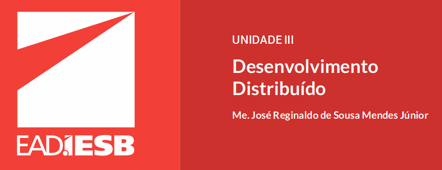

#Stubs
There can be no thought of finishing for ‘aiming for the stars.’ Both figuratively and literally, it is a task to occupy the generations. And no matter how much progress one makes, there is always the thrill of just beginning.
#Skeletons
Skeletons são classes usadas para tratar as chamadas feitas pelo objeto cliente (ORACLE,2010), ou seja, são eles que interpretam os parâmetros enviados pelos stubs e executam osmétodos do objeto remoto. Também são responsáveis por receber o resultado do métodoremoto e direcioná-los para os stubs.
#Enterprise JavaBeans (EJB)
Enterprise JavaBeans (EJB) é uma especificação da plataforma Java EE que provê umaarquitetura de desenvolvimento com base em componentes para aplicações corporativasrobustas, escaláveis e de alto desempenho (ORACLE, 2014). A ideia básica por trás dessaespecificação é criar componentes de negócio reusáveis chamados de enterprise beans, quesão implantados em contêineres EJB de um servidor de aplicação e acessados por diversasaplicações clientes.
#Stateless Session Bean
Por exemplo, quando fazemos o cadastro de umaluno, não precisamos salvar nenhuma informação na sessão do usuário. Um statelessserve justamente para esses casos, em que é preciso executar uma tarefa sem ter quearmazenar o estado na sessão. Na verdade, o estado só existe enquanto o session bean échamado pela aplicação cliente. Toda vez que um método do session bean é invocado,uma instância desse componente é criada e destruída assim que for concluída a execuçãodo método.
#RMI
O Java Remote Method Invocation, ou simplesmente RMI, é uma biblioteca suportada pelaplataforma Java Standard Edition (JSE) que favorece o desenvolvimento de aplicaçõesdistribuídas. Disponibilizada desde a versão Java 1.1, essa API permite uma aplicação clienteinvocar remotamente métodos de objetos que estão disponibilizados em outras máquinasvirtuais Java (JVM) de forma transparente, como se esses objetos fizessem parte da aplicação(SARMENTO, 2003)
#Criar uma aplicação distribuída
1. definir a interface do objeto remoto;
2. implementar a classe do objeto remoto;
3. criar um stubs e um skeleton do objeto remoto;
4. criar uma aplicação servidor para registrar o objeto remoto;
5. criar uma aplicação cliente para invocar o objeto remoto.
#Red Hat JBoss Middleware,
Uma característica marcante das aplicações corporativas é que elas requerem altaescalabilidade e alta disponibilidade.A escalabilidade diz respeito à capacidade de suportar o aumento de transaçõessimultâneas sem afetar o desempenho da aplicação. A disponibilidade corresponde aotempo que a aplicação deve estar livre para atender a qualquer requisição do usuário.Para garantir que esses requisitos não funcionais de escalabilidade e disponibilidade sejamatendidos, precisamos de um servidor de aplicação mais robusto que ofereça mecanismos
#Datasources
Um dos benefícios de se utilizar um servidor de aplicação é o gerenciamento de conexões debanco de dados. Quando se trata de uma aplicação corporativa, a quantidade de usuáriosacessando o sistema pode demandar uma certa quantidade de conexões de banco de dadosalém daquelas já estabelecidas. Deixar que o desenvolvedor implemente um mecanismo paraotimizar o uso de conexões de banco de dados é muito arriscado. Melhor utilizar soluçõesprontas e robustas.O JBoss gerencia as conexões de banco de dados através de Datasources. Há duas maneira deconfigurar um datasource: alterar diretamente o arquivo de configuração standalone.xml ouutilizar a aplicação Administration Console. Em ambos os casos é necessário ter o driver JDBCinstalado no servidor de aplicação